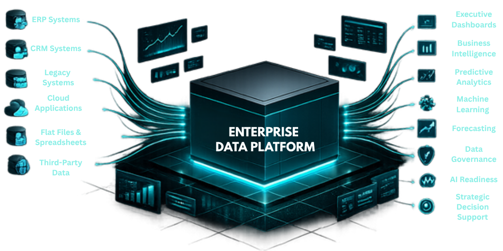
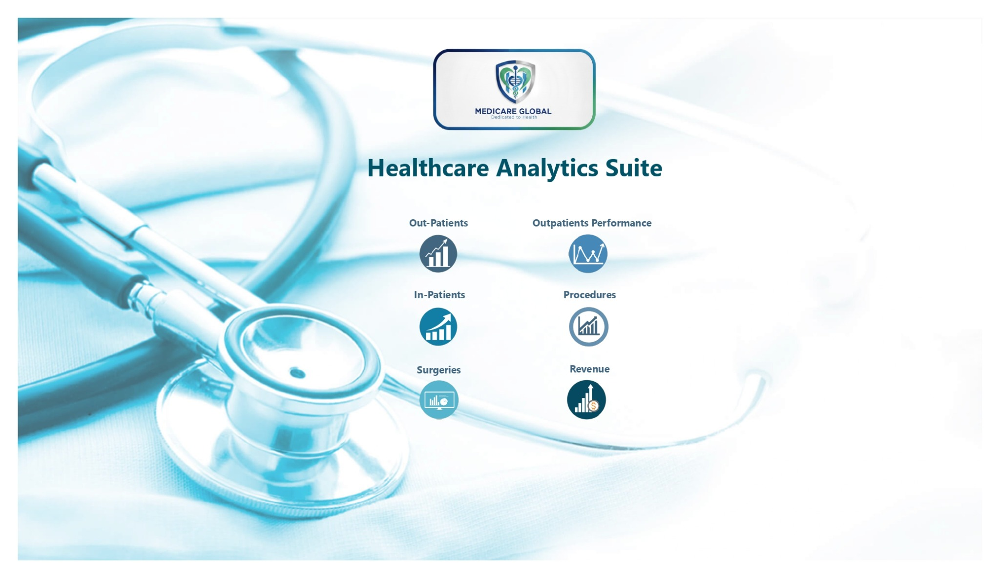

12+Years
Experience
DATA STRATEGY. MODERN PLATFORMS. MEASURABLE IMPACT.
Transforming Fragmented Enterprise Data into Scalable Intelligence Platforms
Helping organizations replace disconnected systems, legacy reporting, and manual data processes with modern cloud data platforms that become a trusted foundation for reporting, business intelligence, predictive analytics, machine learning, and strategic decision-making.
MicrosoftCertified
Professional
MultipleIndustries
Served
EnterpriseData Solutions
Specialist

WHAT I DO
Enterprise Data Modernization
I help organizations modernize enterprise data environments by replacing fragmented data sources, manual processes, and legacy reporting with scalable cloud-based data platforms.
My solutions consolidate enterprise data, automate ETL workflows, strengthen data governance, and create a trusted foundation that enables business intelligence, predictive analytics, machine learning, and confident executive decision-making.
PROBLEMS I SOLVE
Common Enterprise Data Challenges
Fragmented Data Ecosystems
Disconnected applications, spreadsheets, and databases leading to inconsistent information.
Legacy Reporting Processes
Manual reporting that consumes time and delays business decisions.
Siloed Enterprise Data
Critical information spread across departments without a unified source of truth.
Weak Data Governance
Poor data quality, duplication, and inconsistent business definitions.
Limited Analytical Capability
Platforms unable to support predictive analytics, AI, or machine learning initiatives.
Lack of Executive Visibility
Leadership without trusted, real-time insights into organizational performance.
SERVICES
View All ServicesEnterprise Data Modernization
Designing modern enterprise data platforms that replace fragmented legacy environments.
Learn MoreCloud Data Platforms & Data Warehousing
Building centralized, scalable cloud architectures that integrate historical and operational data.
Learn MoreETL Automation & Data Integration
Automating data ingestion, transformation, validation, and delivery across enterprise systems.
Learn MoreBusiness Intelligence & Advanced Analytics
Delivering executive dashboards, KPI frameworks, predictive analytics, and decision-support solutions.
Learn MoreFEATURED CASE STUDIES
View All Case StudiesMicrosoft Fabric Enterprise Data Platform & ETL Automation
Microsoft Fabric • PySpark • Power BI
Unified LMS, Oracle ERP, and shared-file data in a governed Lakehouse, reducing ETL processing by 70–90%, manual preparation by 80–95%, and report refresh time by 60–80%.
Read Case StudyEnterprise On-Premises Data Platform & ETL Automation
Python • SQL Server • Power BI
Built a zero-cloud-orchestration-cost LMS data platform covering 11+ years of history, reducing report load time by over 95%, manual ETL effort by 80–90%, and daily processing time by 70–85%.
Read Case Study
Enterprise Healthcare Analytics Platform for Hospital Operations & Financial Intelligence
Power BI • PostgreSQL • DAX
Embedded a centralized hospital intelligence suite into YASASII HIS, delivering 300%+ greater strategic data visibility and exposing the 84.33% Self-Pay revenue share.
Read Case Study
Global Talent Competitiveness Analytics & Policy Intelligence Platform
Power BI • DAX • Demography Analytics
Transformed a complex global index into interactive country rankings, input-output analysis, and policy intelligence dashboards.
Read Case StudyINDUSTRIES SERVED
Healthcare
Education
Aviation
Logistics
Retail
QSR
Pharmaceuticals
Bioinformatics
Research
Research
Applying enterprise data modernization principles across diverse industries while tailoring solutions to each organization's operational and regulatory needs.
TECHNOLOGY STACK
Enterprise Data Platforms
Data Engineering
Business Intelligence
Enterprise Data Architecture
Ready to Modernize Your Enterprise Data Platform?
Whether you're planning a cloud migration, replacing legacy reporting, or building a scalable enterprise data foundation, I'd be happy to discuss your goals and explore practical approaches tailored to your organization.